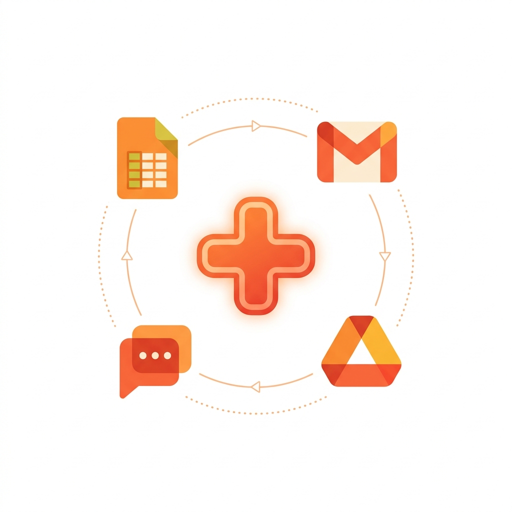
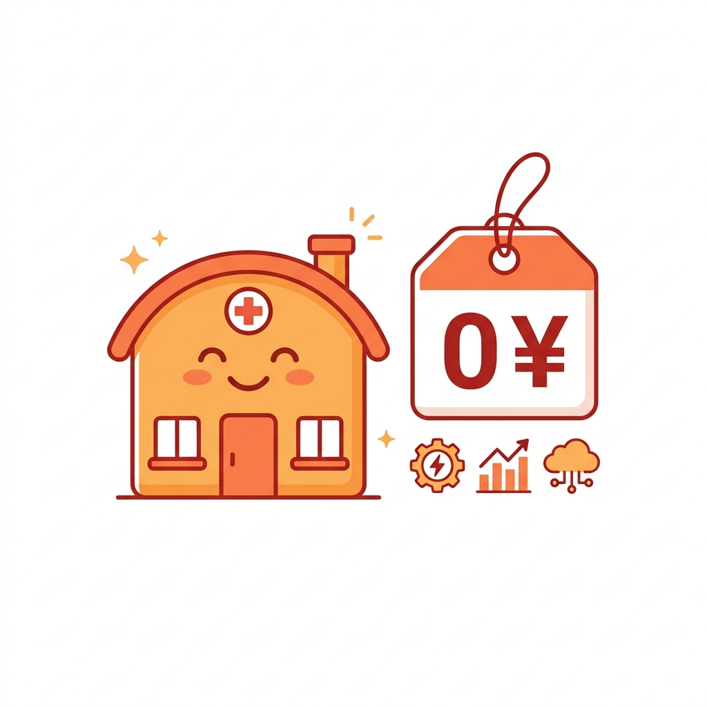

おひさま会の51システムは、100%がGoogle Workspace（GWS）を基盤にしている。AWSもAzureも使っていない。専用サーバーも契約していない。
「本当にそれだけで医療DXができるのか？」と聞かれることが多い。答えは「8割はGWSだけで完結する。残り2割は、GWSの上にGoやPythonを載せれば解決できる」だ。

| GWSの機能 | 医療DXでの使い方 | 追加コスト |
|---|---|---|
| Google Apps Script | 自動化の心臓部。問い合わせ管理・保険証AI判別・レポート生成 | 0円 |
| Google Chat | 全社通知・アラート・ステータス管理の統一窓口 | 0円 |
| Google Drive | FAX PDF保管・書類配信・患者データ管理 | 0円 |
| Spreadsheet | マスターデータ管理・ダッシュボード・ログ記録 | 0円 |
| Gmail | 書類の自動配信・エラー通知 | 0円 |
ただし、すべてがGWSで完結するわけではない。2つの壁がある。
GASには1回の実行が最大6分（トリガー実行は30分）という制限がある。数百枚のFAXを一括処理したり、数千件の患者データを同期するには足りない。
解決策：Go言語で常駐プログラムを作る。院内のPCやサーバーで動かせば、実行時間の制限はない。GWSのAPIを叩いてSpreadsheetやDriveと連携するので、GWSエコシステムからは外れない。
電子カルテはブラウザベースで動いていても、APIが公開されていないことが多い。GASからは操作できない。
解決策：GoやPythonのブラウザ自動化ツールを使う。人間がブラウザで操作する動きを、プログラムで再現する。
| レイヤー | 技術 | 役割 |
|---|---|---|
| 基盤 | Google Workspace | 認証・通知・ファイル管理・データ保管 |
| 自動化エンジン | GAS（TypeScript） | 定期実行・Webhook・Web UI |
| 重い処理 | Go常駐プログラム | 大量データ処理・24時間監視・EXE配布 |
| AI | Gemini API | 書類分類・文字起こし・要約 |
| データ統合 | PostgreSQL | 患者ID統合ハブ（次回コラムで詳述） |
ポイントは、どの層もGWSを中心に据えていること。Go常駐プログラムもGWSのAPIで結果をSpreadsheetに書き、ChatにアラートをPOSTする。PostgreSQLのデータもGASのWeb UIで閲覧する。バラバラなツールを寄せ集めるのではなく、GWSを「ハブ」にして全部をつなぐ設計だ。

「最高のツール」より「全員が使えるツール」を選ぶ。中小医療法人のDXでは、この判断が最も重要だ。